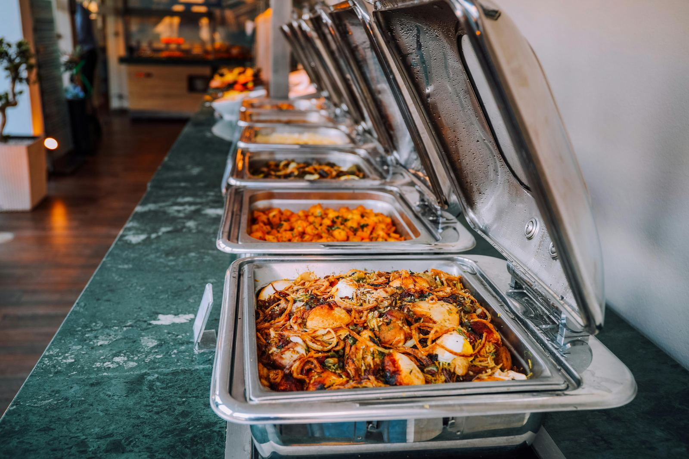

L'apericena è l'evoluzione informale dell'aperitivo torinese, unendo convivialità e praticità in stuzzichini e socializzazione.
L'apericena è un fenomeno che nasce nei bar torinesi alla fine degli anni '90, trasformando un semplice aperitivo in una vera e propria cena. A differenza del tradizionale buffet, l'apericena si caratterizza per la sua natura informale e sociale: si mangia in piedi, spiluccando dal bancone e chiacchierando con un bicchiere in mano. Questo stile di consumo rende l'apericena un'esperienza conviviale e dinamica, ideale per chi vuole socializzare senza l'obbligo di sedersi a un tavolo.

L'apericena ha radici profonde nella tradizione dell'aperitivo torinese, famosa per il vermouth di Antonio Benedetto Carpano. Col tempo, l'aperitivo si è evoluto in una forma più sostanziosa, integrando stuzzichini vari e piatti più ricchi. Questo cambio è stato guidato dal bisogno dei pendolari di ristorarsi prima di affrontare il lungo viaggio di ritorno a casa, senza dover aspettare la cena tradizionale.
L'apericena ha rivoluzionato il modo di vivere il momento del pasto, abbattendo i confini tra la fine della giornata lavorativa e l'inizio della serata. È diventato un modo per continuare a socializzare, mangiando in modo informale e senza fretta. Gli stuzzichini tipici dell'apericena spaziano dalle tartine alle polpette, dai formaggi agli affettati, tutti facilmente consumabili con una mano mentre l'altra tiene il bicchiere.
Riprodurre l'autentica apericena a casa è semplice: basta eliminare le sedie e organizzare un buffet ricco di finger food. L'obiettivo è mantenere la praticità e la convivialità che caratterizzano l'apericena nei bar, permettendo agli ospiti di muoversi liberamente e interagire.

L'apericena è un'innovazione che ha saputo unire la praticità di un pasto veloce con la socialità di un aperitivo. Perfetto per chi vuole vivere un'esperienza culinaria diversa, l'apericena è diventato un appuntamento fisso nella vita sociale italiana, soprattutto nelle città del Nord Italia.
fonte: Ma che cos'è quest'apericena?
Parole Chiave
| Apericena | Un pasto leggero che è una combinazione di aperitivo e cena. |
| Aperitivo | Una bevanda e piccoli cibi prima di pranzo o cena. |
| Buffet | Un tavolo con molti cibi dove puoi scegliere cosa mangiare. |
| Bicchiere | Un contenitore per bere, di vetro o plastica. |
| Stuzzichino | Piccolo pezzo di cibo da mangiare con le dita. |
| Sedersi | Mettersi su una sedia. |
| Parlare | Usare la voce per comunicare con qualcuno. |
| Amico | Persona che conosci bene e ti piace. |
| Mangiare | Mettere cibo in bocca e masticare. |
| Bere | Mettere liquidi in bocca e deglutire. |
| Vino | Bevanda alcolica fatta con uva. |
| Birra | Bevanda alcolica gialla, fatta con cereali. |
| Cucchiaio | Oggetto usato per mangiare cibi liquidi. |
| Forchetta | Oggetto usato per prendere cibo e portarlo alla bocca. |
| Piattino | Piccolo piatto usato per cibi o stuzzichini. |
| Pendolare | Persona che viaggia ogni giorno per andare al lavoro o a scuola. |
| Serata | La parte del giorno dopo il pomeriggio. |
| Sedia | Oggetto su cui ci si siede. |
| Bar | Locale dove si comprano bevande e cibi veloci. |
| Locale | Posto dove si va per bere o mangiare, come un bar o un ristorante. |
Esercizio
Domande
- Che cos'è un'apericena?
- Dove è nata l'apericena e quando?
- Qual è la differenza principale tra un'apericena e un buffet tradizionale?
- Perché l'apericena è popolare tra i pendolari?
- Come si può organizzare un'apericena a casa?